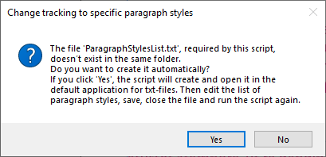
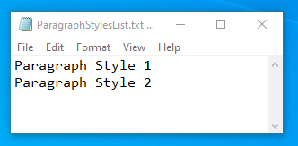
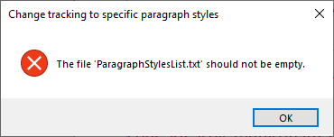
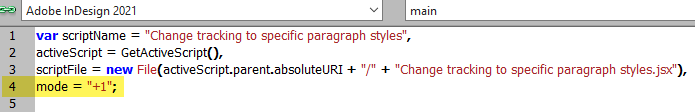
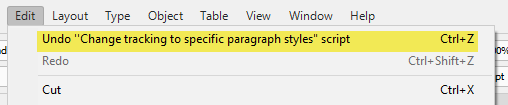
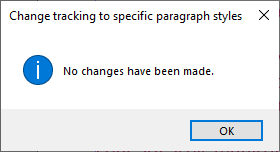

Change tracking to specific paragraph styles
Script for InDesign. Written and tested in version 2021.
This set of scripts changes tracking to the paragraph styles listed in the ParagraphStylesList.txt file which should be located in the same folder so you can edit it without messing with the script.
If the file doesn’t exist, the script will offer to create it.
If you agree and click Yes, it will create it with a couple of default paragraph styles opening it up for editing:


After that, you have to rerun the script.
If the file is empty, it gives a warning:

If you select a text frame or insert the cursor into the text, the whole story will be processed; if you select some text, only the selected text will be processed.
Note the text which has the listed paragraph styles applied, may have different tracking values. These values are increased/decreased accordingly + / - 1. In scripting terms, the text is processed by text ranges.
All three scripts should be located in the same folder, but you should use (assign keyboard shortcuts to) Increase tracking.jsx and Decrease tracking.jsx only. They trigger the Change tracking to specific paragraph styles.jsx script sending the tracking values to it. Feel free, if you need more variants, to duplicate them and change these values in the mode variable.

You can undo/redo the scripts.

Also, the script warns if no changes were made to the document:

Click here to download the script.
Go back to the main Scripts for L'Express de Toronto Inc. page